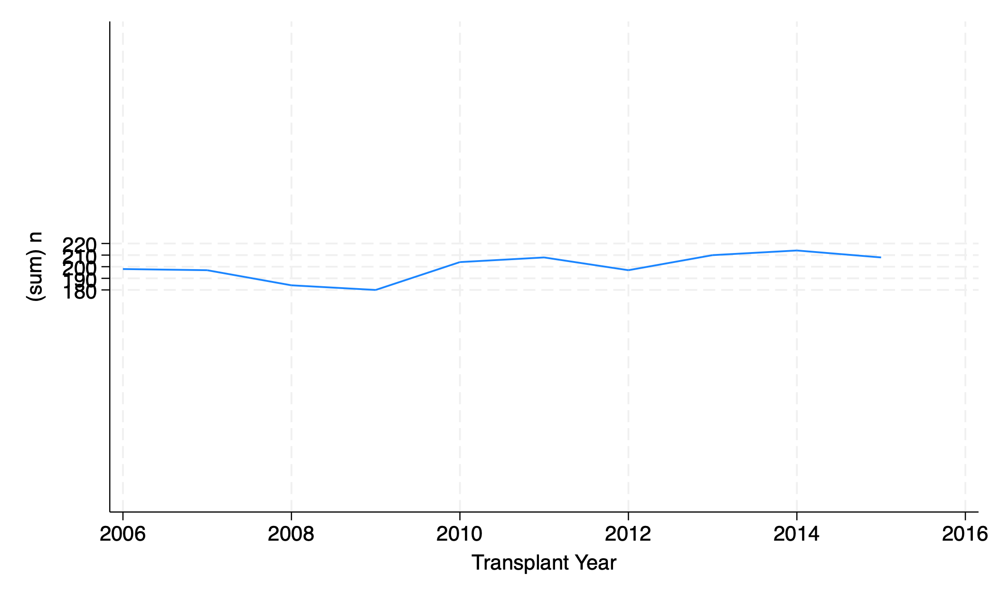

5. Graphs#
Visualizing data
capture log close _all
log using creturn_list.log, replace
creturn list
log close
When you search the above output for scheme you’ll find the follow:
Graphics settings
----------------------------------------------------------------------------------------------------
c(graphics) = "on" (set graphics)
c(scheme) = "stcolor" (set scheme)
c(printcolor) = "asis" (set printcolor)
c(copycolor) = "asis" (set copycolor)
c(maxbezierpath) = 0 (set maxbezierpath)
c(min_graphsize) = 1 (region_options)
c(max_graphsize) = 100 (region_options)
----------------------------------------------------------------------------------------------------
My machine has c(version) == 18 and the default is stcolor. The world-renowned, sui generis, Stata s2color has finally been abandoned
But if I wish to reproduce that classic Stata graphical output I might change my color scheme:
webuse lifeexp, clear
hist lexp
webuse lifeexp, clear
hist lexp
graph export lexp_stcolor.png, replace
That’s my default. So lets see what it looks like on virtually all versions of Stata before 18:
. webuse lifeexp, clear
(Life expectancy, 1998)
. di c(scheme)
stcolor
. hist lexp, scheme(s2color)
(bin=8, start=54, width=3.125)
. di c(scheme)
stcolor
. graph export lexp_s2color.png, replace
file /Users/d/Dropbox (Personal)/1f.ἡἔρις,κ/1.ontology/summer/lexp_s2color.png saved as PNG format
.

I think the above output clarifies what the c in c(scheme) refers to: a constant default, even when I change the output parameter.
So lets reset my default:
set scheme s2color
webuse lifeexp
di c(scheme)
hist lexp
graph export lexp_setscheme.png, replace
. set scheme s2color
. webuse lifeexp
(Life expectancy, 1998)
. di c(scheme)
s2color
. hist lexp
(bin=8, start=54, width=3.125)
. graph export lexp_setscheme.png, replace
file /Users/d/Dropbox (Personal)/1f.ἡἔρις,κ/1.ontology/summer/lexp_setscheme.png saved as PNG
format
.
How may one restore the default c(scheme)?
So lets see if that works:
set scheme default
di c(N)
. set scheme default
scheme default not found
r(111);
That did not work. And after a Google search (chatGPT hasn’t yet been trained on data from a post Stata18 world!), I found nothing.
So I’ll just invoke my prior knowledge:
set scheme stcolor
di c(scheme)
. set scheme stcolor
. di c(scheme)
stcolor
.
5.1 histogram#
Univariable: distribution
use transplants, clear
hist bmi
graph export bmi.png, replace
. use transplants, clear
. hist bmi
(bin=32, start=17, width=.71875)
. graph export bmi.png, replace
file /Users/d/Dropbox (Personal)/1f.ἡἔρις,κ/1.ontology/summer/bmi.png saved as PNG format
.

32 bars
First bar is BMI 17-17.71875
Each one represents 0.71875 BMI units
5.1.1 density#
hist bmi, width(2)
graph export bmi2.png, replace
. hist bmi, width(2)
(bin=12, start=17, width=2)
. graph export bmi2.png, replace
file /Users/d/Dropbox (Personal)/1f.ἡἔρις,κ/1.ontology/summer/bmi2.png saved as PNG format
.
12 bars
First bar is BMI 17-19
Each on repesents 2 BMI units
hist bmi, bin(500) start(0)
graph export bmi_bin500.png, replace
. hist bmi, bin(500) start(0)
(bin=500, start=0, width=.08)
. graph export bmi_bin500.png, replace
file /Users/d/Dropbox (Personal)/1f.ἡἔρις,κ/1.ontology/summer/bmi_bin500.png saved as PNG format
.
hist bmi, width(2) start(0)
graph export bmi3.png, replace
. hist bmi, width(2) start(0)
(bin=20, start=0, width=2)
. graph export bmi3.png, replace
file /Users/d/Dropbox (Personal)/1f.ἡἔρις,κ/1.ontology/summer/bmi3.png saved as PNG format
.
20 bars
First bar is BMI 0-2
Each one represents 2 units
use transplants, clear
hist bmi, bin(10)
graph export bmi_bin10.png, replace
. use transplants, clear
. hist bmi, bin(10)
(bin=10, start=17, width=2.3)
. graph export bmi_bin10.png, replace
file /Users/d/Dropbox (Personal)/1f.ἡἔρις,κ/1.ontology/summer/bmi_bin10.png saved as PNG format
.
end of do-file
.
10 bars
Four flavors of the histogram command:
density (default)
fraction
percent
frequency
use transplants, clear
hist age, addplot(kdensity age)
graph export hist_kdensity.png, replace
. use transplants, clear
. hist age, addplot(kdensity age)
(bin=33, start=0, width=2.5757576)
. graph export hist_kdensity.png, replace
file /Users/d/Dropbox (Personal)/1f.ἡἔρις,κ/1.ontology/summer/hist_kdensity.png saved as PNG format
.
5.1.2 fraction#
hist rec_wgt_kkg, fraction
. hist rec_wgt_kg, fraction
(bin=32, start=9.67, width=4.5596875)
. graph export weight.png, replace
file /Users/d/Dropbox (Personal)/1f.ἡἔρις,κ/1.ontology/summer/weight.png saved as PNG format
.
5.1.3 percent#
hist rec_wgt_kg, percent
graph export weight2.png, replace
. hist rec_wgt_kg, percent
(bin=32, start=9.67, width=4.5596875)
. graph export weight2.png, replace
file /Users/d/Dropbox (Personal)/1f.ἡἔρις,κ/1.ontology/summer/weight2.png saved as PNG format
.

5.1.4 frequency#
hist rec_wgt_kg, freq
graph export weight3.png, replace
. hist rec_wgt_kg, freq
(bin=32, start=9.67, width=4.5596875)
. graph export weight3.png, replace
file /Users/d/Dropbox (Personal)/1f.ἡἔρις,κ/1.ontology/summer/weight3.png saved as PNG format
.
end
5.1.5 discrete#
hist dx
graph export discrete.png, replace
. hist dx
(bin=33, start=1, width=.24242424)
. graph export discrete.png, replace
file /Users/d/Dropbox (Personal)/1f.ἡἔρις,κ/1.ontology/summer/discrete.png saved as PNG format
0.242424 diagnoses?
meaningless
option to adapt output to discrete variable
hist dx, disc
graph export discrete2.png, replace
. hist dx, disc
(start=1, width=1)
. graph export discrete2.png, replace
file /Users/d/Dropbox (Personal)/1f.ἡἔρις,κ/1.ontology/summer/discrete2.png saved as PNG format
.
end
5.1.6 addplot#
hist height if gender==0, addplot(hist height if gender ==1)
graph export addplot.png, replace
hist rec_hgt_cm if gender==0, fcolor(midblue%50) ///
addplot(hist rec_hgt_cm if gender ==1, fcolor(orange%40))
graph export addplot2.png, replace
hist rec_hgt_cm if gender==0, ///
fcolor(midblue%50) ///
legend( ///
lab(1 "Male") ///
lab(2 "Female")) ///
addplot(hist rec_hgt_cm if gender ==1, fcolor(orange%40))
graph export addplot3.png, replace
5.1.7 scheme#
hist rec_hgt_cm, scheme(s2color)
graph export scheme.png, replace
5.1.8 normal#
hist rec_hgt_cm, normal
graph export overlay.png, replace
5.2 twoway#
Bivariable: correlation
5.2.1 scatter#
use donors, clear
graph twoway scatter don_wgt don_hgt
graph export twowway.png, replace
. use donors, clear
. graph twoway scatter don_wgt don_hgt
. graph export twowway.png, replace
file /Users/d/Dropbox (Personal)/1f.ἡἔρις,κ/1.ontology/summer/twowway.png saved as PNG format
.
The twoway plot may be a simple descriptive visualization of data. But what is implied during this exploratory phase of analysis is the following regression:
\(Y = \beta_0 + \beta_1 X_1 + \beta_2 X_2 + \cdots + \beta_N X_N \pm \varepsilon_i \)
So if you don’t have any predictor, then you’re left with just \(Y = \beta_0 \pm \varepsilon\), which includes all one-way plots such as histogram, boxplot, or a twoway plot of that one variable against a “meaningless” x-axis:
use transplants, clear
g x=1
qui sum age
return list
g b0=r(mean)
g ub=r(mean)+r(sd)*1.96
g lb=r(mean)-r(sd)*1.96
twoway (scatter age x, ///
jitter(5) ///
xscale(off) ///
mcolor(lime%5) ///
) ///
(scatter b0 x, ///
msize(2) ///
mcolor(midblue%80) ///
) ///
(rcap ub lb x, ///
legend(off) ///
lc(orange%80) ///
yti("Age at Transplant, y", orientation(horizontal)) ///
note("Mean & 95%CI", size(3)) ///
)
graph export age_m_95ci.png, replace
5.2.2 line#
“ecd” = “extended criteria donor” = donor age \(\gt 60\), or donor age \(50-59\) with certain comorbidities
use transplants, clear
bys age: egen mean_ecd = mean(don_ecd)
egen age_tag = tag(age)
graph twoway line mean_ecd age if age_tag==1
graph export twoway_egen.png, replace
How has the number of standard criteria donor (SCD) and extended criteria donor (ECD) transplants changed over time?
SCD = donor age < 50 or (age 50-59 and donor had at most one of: hypertension, death by cerebrovascular accident, terminal serum creatinine > 1.5 mg/dL)
ECD = donor age >= 60 or (age 50-59 and donor had at least two of: hypertension, death by cerebrovascular accident, terminal serum creatinine > 1.5 mg/dL)
Let’s graph the number of SCD and ECD transplants over time
use tx_yr.dta, clear
desc
. use tx_yr.dta, clear
. desc
Contains data from tx_yr.dta
Observations: 10
Variables: 13 2 Jul 2021 08:07
Variable Storage Display Value
name type format label Variable label
yr int %8.0g Transplant Year
not_working double %9.0g Num. Unemployed Recipients
n double %8.0g (sum) n
hypertensive double %9.0g (sum) hypertensive
unknown_disease double %9.0g (sum) unknown_disease
diabetes double %9.0g (sum) diabetes
ecd double %4.0g (sum) ecd
female double %8.0g (sum) female
rec_hcv_antib~y double %9.0g Number HCV+ Recipients
over70 double %9.0g Number Recips. Over 70 Years Old
male int %8.0g
scd int %8.0g
total float %9.0g Total Num. of Recipients
Sorted by: yr
tx_yr.dta has data on the frequency of specific transplant types per year. For example, the variable female is the number of female transplant recipients per year. The variable scd is the number of standard criteria donor transplants performed per year.
graph twoway line n yr
graph export line_n_yr.png, replace

graph twoway line ecd scd yr
graph export line_n_yr2.png, replace
5.2.3 connected#
graph twoway connected n yr
graph export connected.png, replace
5.2.4 area#
graph twoway area n yr
graph export area.png, replace
5.2.5 bar#
graph twoway bar n yr
graph export bar.png, replace
5.2.6 function#
graph twoway function y=x^2+2
graph export function.png
5.3 y#
Several y variables
graph twoway area ecd scd yr
graph export nyvar.png, replace
Change order
graph twoway area scd ecd yr
graph export nyvar2.png, replace
Order matters: the one listed first gets graphed first. Additional areas might overlie the first one.
graph twoway bar scd ecd yr
graph export nyvar3.png, replace
Interpretation is tricky. In 2010, were there about 130 SCD transplants (top of red to top of blue) or 170 (x- axis to top of blue)?
5.4 overlay#
twoway line n yr || connected male female yr
graph export line_connect.png, replace
regress n yr
twoway line n yr ///
|| function y=_b[_cons]+_b[yr]*x, range(yr)
graph export line_regress.png, replace
twoway line female yr ///
|| line male yr ///
|| line scd yr ///
|| line ecd yr ///
|| line n yr
graph export five_overlay.png, replace
5.5 axis#
The graph of # transplants per year exaggerates year- on-year change; the value for 2009 appears to be near zero, but is actually 180. How can we fix the axis?
5.5.1 scale()#
twoway line n yr, yscale(range(0))
graph export scale.png, replace
Make sure the y axis range includes the number zero
twoway line n yr, yscale(range(0 400))
graph export scale2.png, replace

Make sure the y axis range includes the numbers 0 and 400
tw li n yr, xscale(range(2014))
graph export range.png, replace
tw li ecd yr, xscale(off) yscale(off)
graph export scale_off.png, replace
5.6 program#
capture program drop figure1
qui program define figure1
syntax varlist, title(str) xtitle(str) ylt(str)
local y_axis_var: di word("`varlist'", 1)
local x_axis_var: di word("`varlist'", 2)
local xti: di "`xtitle'"
local yline_text: di "`ylt'"
qui sum `y_axis_var', d
g p50=r(p50)
g p25=r(p25)
g p75=r(p75)
local m_age=r(mean)
local m_age_text=r(mean) + 2
qui sum `x_axis_var'
local m_xaxis=r(mean)
#delimit ;
twoway (scatter p50 abo in 1/100)(rcap p25 p75 abo in 1/100,
ti("`title'")
xti("`xti'")
text(`m_age_text' `m_xaxis' "`yline_text'")
yline(`m_age',
lc(lime)
)
yti("`y_axis_var'",
orientation(horizontal)
)
ylab(10(10)80)
xlab(
1 "A"
2 "B"
3 "AB"
4 "O"
)
legend(off
lab(1 "Median")
lab(2 "1st Quartile")
lab(3 "4th Quartile")
order(3 1 2)
)
note("Median & IQR")
)
;
#delimit cr
end
use transplants, clear
figure1 age abo, title("Age at Transplant") xtitle("ABO Blood Group") ylt("Mean Age")
graph export figure1.png, replace
This is a modified program with twoway rcap to draw the interquartile range. I’ve also suppressed the legend since the output is modified. Hope you can notice the difference from the one in the video. But you can still find a copy of the original program below.
The original program developed together in class:
capture program drop figure1
qui program define figure1
syntax varlist, title(str) xtitle(str) ylt(str)
local y_axis_var: di word("`varlist'", 1)
local x_axis_var: di word("`varlist'", 2)
local xti: di "`xtitle'"
local yline_text: di "`ylt'"
qui sum `y_axis_var', d
g p50=r(p50)
g p25=r(p25)
g p75=r(p75)
local m_age=r(mean) + 2
qui sum `m_axis_var'
local m_xaxis=r(mean)
#delimit ;
twoway (scatter p50 abo in 1/100)(rcap p25 p75 abo in 1/100,
ti("`title'")
xti("`xti'")
text(`m_xaxis' `m_age' "`yline_text'")
yline(`m_age',
lc(lime)
)
yti("`y_axis_var'",
orientation(horizontal)
)
ylab(10(10)80)
xlab(
1 "A"
2 "B"
3 "AB"
4 "O"
)
legend(off
lab(1 "Median")
lab(2 "1st Quartile")
lab(3 "4th Quartile")
order(3 1 2)
)
note("Median & IQR")
)
;
#delimit cr
end